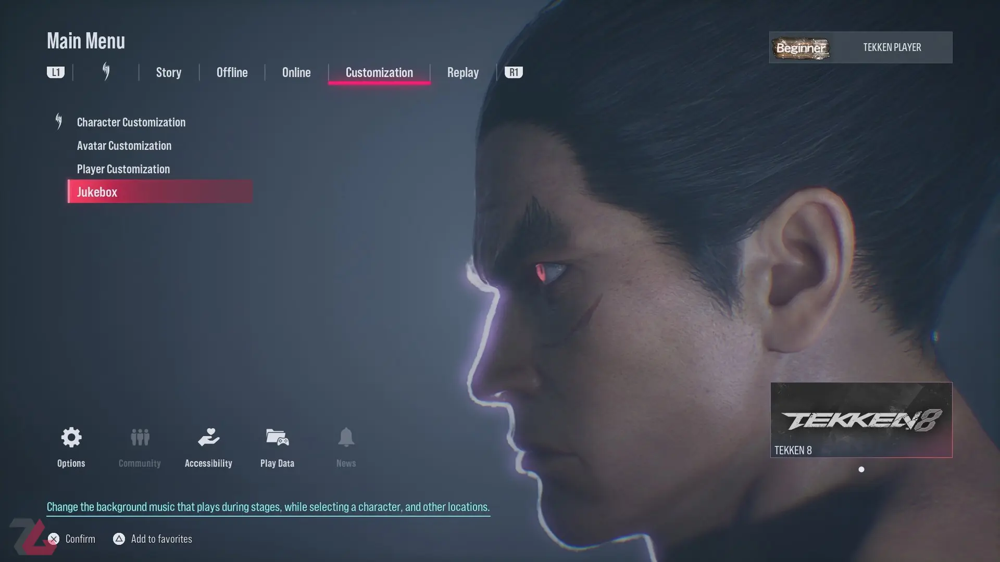
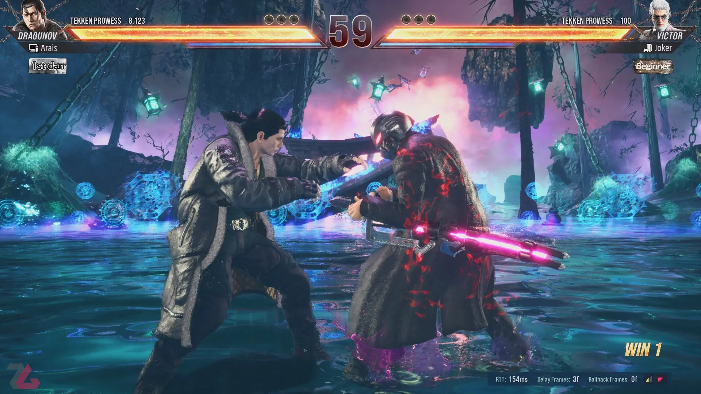

رضا قاسمی
سه شنبه 17 بهمن 1402 ساعت 22:51
بندای نامکو با تکن و انیمیشنهای بهتر، گیمپلی روانتر و البته کاراکترهای بهیادماندنیتری توانست خیلی موفقتر عمل کند. مجموعه تکن هم بازیهای زیادی دارد؛ از تکن سه، پنج گرفته تا هفت هر کدام دستاوردهای مختلفی برای این مجموعه داشتهاند. تکن ۷ بود که بهنوعی ورزشهای الکترونیک تکن را احیا کرد. شاید تکن ۸ هم در یک نگاه سطحی خیلی شبی به بازیهای قبلی تکن به نظر برسد. اما تکن ۸ با یک سری مکانیزمهای جدید خودش را خیلی از نسخههای دیگر متمایز کرده است.
خیلی دوست دارم اول از همه در مورد مکانیزمهای جدید تو بازی جدید تکن ۸ صحبت کنم. اما خب یک چیزی دستم را بسته است. بگذارید اینطوری بگم. من معمولا اول بررسی بازیها در مورد داستان بازی صحبت نمیکنم. اما بخش داستانی Tekken 8 به طرز عجیبی من را تحت تاثیر قرار داد و به فکر فرو برد. معمولا داستان در بازیهای فایتینگ آنقدر شاید برای من اهمیت نداشته باشد و راستش مشکلی با این موضوع ندارد. به طوری کلی داستان و خط داستانی تکن خیلی عجیب و غریب است. یک سری درگیری خانوادگی بین پدر و پسرها. در تکن ۸ هم همین داستانها را داریم. البته با این تفاوت که داستان بیشتر روی جین کازاما جریان دارد. دوست ندارم زیاد درمورد جزئیات داستانی صحبت کنم. اما تجربه بخش داستانی تکن ۸ برای من مثل تماشا کردن یک انیمه حماسی تمیز است. داستان تکن ۸ برای من به جرات بهترین داستانی بود که در یک بازی فایتینگ تجربه کردم.
وقت آن رسیده است که بریم سراغ اصل مطلب. آن هم گیمپلی و سیستم جدید Heat بازی Tekken 8 است. سیستم هیت شخصیت زیادی به بازی تکن ۸ و خود مجموعهاش داده است. سیستم هیت بازی تکن ۸ را بهشدت سرعتی و هیجانانگیز میکند. یک نوار جدید آبی رنگ زیر نوار سلامتی کاراکترها اضافه شده است که Heat Timer نام دارد. شما با روشهای مختلف میتوانید هیت را فعال کنید. وقتی کاراکتر شما در این وضعیت قرار میگیرد، ضرباتش قویتر میشود یا به اصطلاح بازیهای فایت ضربات شما پلاس میشوند. Heat Smash اولین روش برای فعال کردن هیت است که زدن یک دکمه خاص میتوانید آن را اجرا کنید. وقتی هیت اسمش را اجرا میکنیم، بازی یک انیمیشن سینماتیک کوتاه از کاراکتر شما نشان میدهد و بلافاصله شاهد اجرای یک ضربه از سوی کاراکتر هستیم. بعضی وقتیها بازیکنها از هیت اسمش برای مکانیک دفاعی هم استفاده میکنند.
ویژگی دیگری که خیلی روی گیمپلی تکن ۸ تاثیر گذاشته و آن را با بازیهای قبلی متفاوت کرده، وجود چیپ دمیج و ریکاوری نوار سلامتی است. اگر شما حین هیت به حریف ضربه وارد کنید و آن هم دفاعاش کند، بخش کوچکی از نوار سلامتی را از دست میدهد. درواقع به این فرایند میگویند چیپ دمیج (Chip Damage). حالا حریف میتواند با وارد کردن ضربههای موفق به شما آن میزان نوار سلامتی از دست رفته را بازیابی و جبران کند. مثل بازی تکن۷، اینجا Rage Art هم داریم. وقتی نوار سلامتی شما از یک مقداری کمتر میشود، نوار سلامتی کاراکتر شما آتشین میشود و بعد از اجرای ریج آرت میتوانید حرکت سوپر با آن انیمیشن بلند و سینمایی را روانه حریفتان بکنید.
بازی Tekken 8 با ۳۲ تا کاراکتر عرضه میشود. چهرههای آشنای زیادی در بین شخصیتهای این بازی دیده میشود. درکنار کاراکترهای اصلی مثل جین، پاول، کینگ و لا، شخصیتهای جدیدی هم میبینیم که خیلی جذاب به نظر میرسند. رِینا، یک دختر مرموز که از روش مبارزهای میشیما استفاده میکند. آن طرف هم ویکتور را داریم که یک مامور فرانسوی قوی به نظر میرسد. در حال حاضر بخش بزرگی از کاراکترهای بازی تکن ۸ را کاراکترهای قدیمی تشکیل میدهد. مثل همیشه هم کاراکترهای بیشتری به بازی تکن ۸ اضافه میشوند. گویا یکی از این کاراکترها ادی گوردو است که با ظاهر خیلی متفاوتی در این بازی حضور پیدا میکند. استیجهای بازی هم زیبا کار شدهاند و قرار است با استیجهای خوشگلتری در بازی تکن ۸ طرف باشیم.